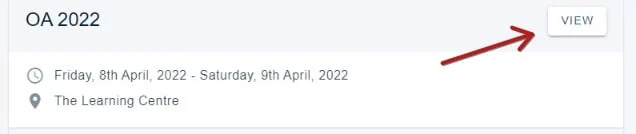
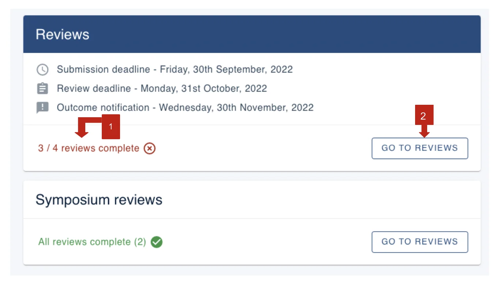
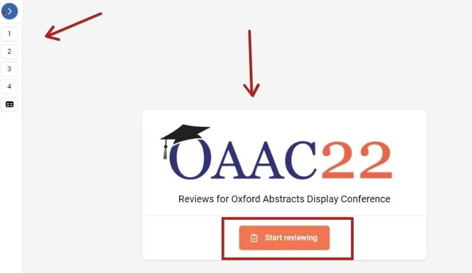
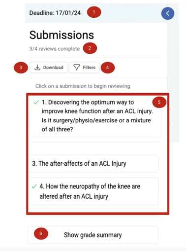
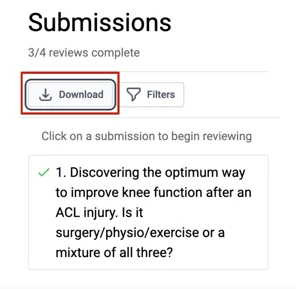
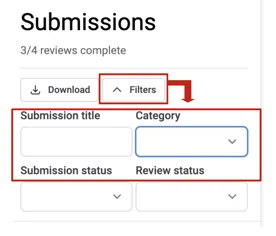
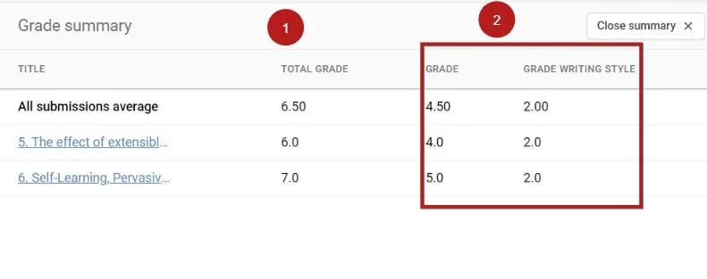
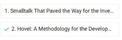

Completing a review
For reviewersOrganising the event?
Find out how to complete your review in the Oxford Abstracts reviewing space.#
If you experience any issues or have any questions, please contact your event administrator in the first instance.
The Review Screen
Once logged in, your Personal dashboard will show a list of the events for which your email is associated with.
Click View on the event you wish to be directed to.

Within the review section of the event you will see the following:
1) How many reviews you have been assigned and how many have been completed
2) A button to click to start reviewing

You will then be directed to the review screen.
In the left hand menu, you will see a list of the reviews that you have been assigned, represented by their submitter ID (1,2,3,4 etc). You can click the blue arrow button to expand the menu to see more details.
In the main part of the screen, you can see an orange button Start reviewing
Click on either the numbers in the left hand menu, or the orange button to begin reviewing.

The left-hand menu#

After expanding the menu you will see:
1) Your review deadline
2) The review(s) status
5) The list of submissions you have been assigned
Downloading your reviews#

Clicking this link will open a new tab on your web browser displaying the submission data of all reviews that you have been assigned.
Filtering your reviews#

If you have been assigned a significant number of reviews, you can filter according to:
Title, Category, Submission Status, or Review Status.
(NB: Category may also appear as an option)
Grade summary#
The Grade Summary displays the total grade you have assigned for each submission, and the grade for each question. In the example below, there are two grade questions in the form.

Begin reviewing#
You can choose to either click on a specific submission link in the left hand menu, or click the orange button in the main menu to being your reviewing. The latter will go through each submission chronologically.
On the left you will see the submission to be reviewed, and the questions you should complete on the right.
Mandatory review questions are marked with an asterisk.
If you see Incomplete to the top right of the screen, this means that the submission is incomplete, not the review. When you have completed a review, click the Next submission button at the bottom right of the screen (or Previous submission, if required).


When you have completed all the mandatory questions on the form, a green tick will appear next to the submission in the left hand menu.
Should you require any further assistance, please contact our support desk via our Contact Form.
Did this page solve it?
Thanks — this helps us fix it.